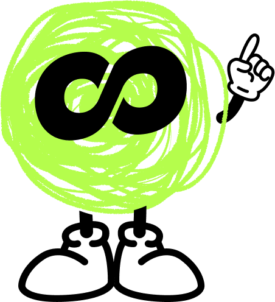
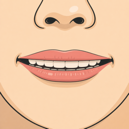
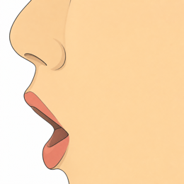
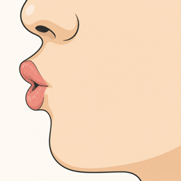
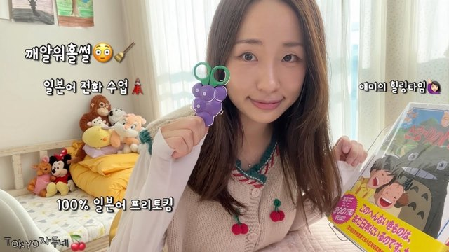
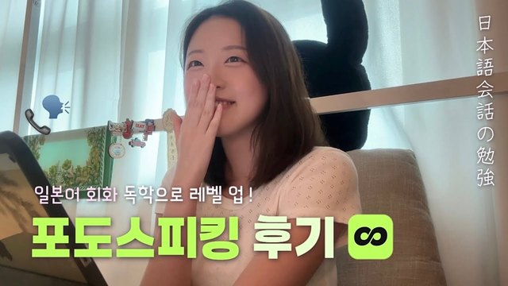
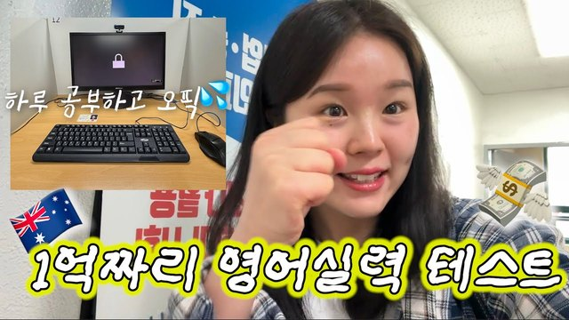
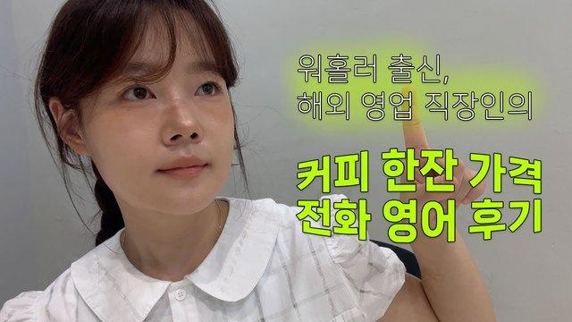
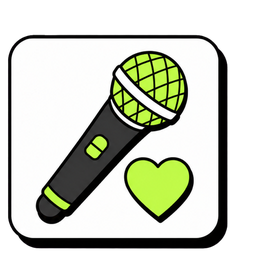
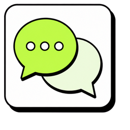

超入門
첫인사 (はじめまして！)
같이 인사해요. 제가 시작할게요!一緒にあいさつしましょう。私から始めますね！

니즈 파악ニーズ把握
あなたのことを教えてください。答えに合わせて、最後のプランが変わります。
학습 동기 (学ぶきっかけ)
왜 한국어를 배우고 싶어요? 여러 개 골라도 돼요.どうして韓国語を学びたいですか？いくつ選んでも大丈夫です。
목표 (ゴール)
한국어로 뭘 할 수 있게 되고 싶어요? 하나만 골라 주세요.韓国語で何ができるようになりたいですか？1つだけ選んでください。
학습 페이스 (学習ペース)
일주일에 수업을 몇 번 받고 싶어요?1週間に何回、レッスンを受けたいですか？

체험 레슨体験レッスン
ここから25分。終わるころには、本物の韓国語の単語が読めます。約束します！
오늘의 목표 (今日のゴール)
이 세 단어를 보세요. 수업이 끝나면 스스로 읽을 수 있어요.この3つの単語を見てください。授業が終わると、自分で読めるようになります。
이미 아는 단어 (もう知っている単語)
사실 한국어 단어, 이미 꽤 알고 있어요. 제가 읽어 볼게요. 잘 들어 보세요.実は韓国語の単語、もうけっこう知っています。私が読みます。よく聞いてみましょう。
글자 블록 (文字ブロック)
한 글자는 상자예요. 화면에 있는 '나'를 보세요. 자음 자리와 모음 자리가 있어요.1文字は「箱」。画面の「나」を見てください。子音の席と母音の席があります。
모음 (母音)
먼저 모음이에요. 소리를 익힌 다음에 자음을 더해요.まずは母音。音を覚えてから、子音を足します。
모음 ① (母音 3つ)
제가 먼저 읽을게요. 잘 듣고 따라 읽어 보세요.私が先に読みます。よく聞いて、まねして読んでみましょう。



듣고 고르기 (聞いて選ぼう)
아·어·이 중에서 하나씩 읽을게요. 맞는 쪽을 눌러 보세요.「아·어·이」から1つずつ読みます。正しいほうをタップしてください。
혼자 읽기 (ひとりで読もう)
방금 배운 세 개, 혼자 읽어 보세요. 순서를 섞었어요.さっき習った3つを、ひとりで読んでみましょう。順番を入れかえました。
모음 ② (母音 のこり3つ)
제가 먼저 읽을게요. 잘 듣고 따라 읽어 보세요.私が先に読みます。よく聞いて、まねして読んでみましょう。


듣고 고르기 (聞いて選ぼう)
오·우·으 중에서 하나씩 읽을게요. 맞는 쪽을 눌러 보세요.「오·우·으」から1つずつ読みます。正しいほうをタップしてください。
혼자 읽기 (ひとりで読もう)
이번에도 혼자 읽어 보세요. 순서를 섞었어요.今度もひとりで読んでみましょう。順番を入れかえました。
헷갈리는 짝 (まちがえやすいペア)
가타카나는 같지만 소리는 달라요. 제 발음을 잘 듣고 따라 해 보세요.カタカナは同じでも、音は違います。私の発音をよく聞いて、まねしてみましょう。

口を大きく開けて 오 くちびるを丸く
くちびるを丸く

丸く、小さく 으 くちびるを横に
くちびるを横に
듣고 고르기 (聞いて選ぼう)
헷갈리는 짝이에요. 한 줄에 하나씩 읽을게요. 맞는 쪽을 눌러 보세요.まちがえやすいペアです。1行に1つずつ読みます。正しいほうをタップしてください。
여섯 개 읽기 (6つを読もう)
여섯 개를 소리 내어 읽어 보세요. 순서를 섞었어요.6つを声に出して読んでみましょう。順番を入れかえました。
소리 없는 ㅇ (音のない ㅇ)
노란 자리를 보세요. 계속 ㅇ이 있었어요. 그런데 소리가 없어요.黄色い席を見てください。ずっと「ㅇ」がいました。でも音はゼロ。
모음 자리 (母音の場所)
세로로 긴 모음은 오른쪽, 가로로 긴 모음은 아래. 이게 다예요.たて長の母音は右、よこ長の母音は下。ルールはこれだけ。
글자 만들기 (文字を作ろう)
이번엔 직접 만들어요. 위에 쓴 대로 ㅇ과 모음을 눌러 보세요.今度は自分で作ります。上に書いてあるとおり、ㅇ と母音をタップしてください。
자음 (子音)
자음은 딱 두 개, ㄴ과 ㅁ이에요. 자음은 그대로 두고 모음만 바꿔요.子音は2つだけ：ㄴ と ㅁ。子音は固定したまま、母音だけ入れかえます。
자음 ㄴ (子音 ㄴ)
ㄴ은 n 소리예요. 제가 먼저 읽을게요. 따라 읽어 보세요.「ㄴ」は n の音。私が先に読みます。まねして読んでみましょう。
ㄴ 읽기 (ㄴ を読もう)
ㄴ, 이번엔 혼자 읽어 보세요. 멈추지 말고요.ㄴ、今度はひとりで読んでみましょう。止まらずに。
자음 ㅁ (子音 ㅁ)
ㅁ은 m 소리예요. 저를 따라 읽어 보세요.「ㅁ」は m の音。私のあとについて読んでみましょう。
ㅁ 읽기 (ㅁ を読もう)
ㅁ도 혼자 읽어 보세요. 멈추지 말고요.ㅁ もひとりで読んでみましょう。止まらずに。
조합표 (組み合わせ表)
외운 건 여덟 개인데, 글자는 열두 개가 됐어요. 제가 한 줄씩 읽을게요. 따라 읽어 보세요.おぼえたのは8パーツ。なのに12文字。私が1行ずつ読みます。まねして読んでみましょう。
섞어 읽기 (まぜて読もう)
ㄴ과 ㅁ을 섞었어요. 한 블록씩 읽어 보세요.ㄴ と ㅁ をまぜました。1ブロックずつ読んでみましょう。
모음 찾기 (母音さがし)
이번엔 색이 없어요. ㅏ가 들어간 블록을 모두 눌러 보세요.今度は色なし。「ㅏ」が入っているブロックを全部タップしてください。
듣고 고르기 (聞いて選ぼう)
ㄴ과 ㅁ이에요. 한 줄에 하나씩 읽을게요. 맞는 쪽을 눌러 보세요.ㄴ と ㅁ です。1行に1つずつ読みます。正しいほうをタップしてください。
블록 만들기 (ブロックを作ろう)
위에 쓴 대로, 아래에서 자음과 모음을 눌러 보세요.上に書いてあるとおり、下の子音と母音をタップしてください。
단어 (単語)
부품이 다 모였어요. 이제 진짜 단어를 읽어 보세요.パーツがそろいました。本物の単語を読んでみましょう。
단어 읽기 (単語を読もう)
전부 아는 글자로 되어 있어요. 하나씩 읽어 보세요.全部、知っている文字でできています。1つずつ読んでみましょう。
단어 찾기 (聞いてさがそう)
제가 단어를 두 개 말할게요. 하나씩 찾아서 눌러 보세요.私が単語を2つ言います。1つずつさがしてタップしてください。
듣고 만들기 (聞いて組み立てよう)
이번엔 제가 말만 할게요. 듣고 글자 세 개를 만들어 보세요.今度は私が言うだけ。聞いて文字を3つ作ってみましょう。
간판 읽기 (看板を読もう)
한국에 있다고 상상해 보세요. 간판을 소리 내어 읽어 보세요!韓国にいると想像してみてください。看板を声に出して読んでみましょう！
오늘의 결과 (今日の成果)
25분 전엔 하나도 못 읽었죠? 지금은 이만큼 읽을 수 있어요.25分前は1文字も読めませんでしたよね？今はこれだけ読めます。
리포트 & 플랜レポート＆プラン
오늘 수업에서 본 지금 실력과, 목표까지 가는 길을 함께 보여 드릴게요.
포도님의 한국어 실력,
꼼꼼하게 진단했어요.
—・체험 레슨・25분
내 레벨
Lv.1/ 10
한글을 하나씩 읽어요

TOPIK 1급—
오늘 수업에서 학생이 어땠나요?
항목별 진단포도 수강생 평균과 나란히 놓고 봤어요
정확성문법과 말끝이 어땠나요?
어휘쓸 수 있는 단어가 얼마나 되던가요?
유창성말이 얼마나 이어졌나요?
발음학생 말을 알아듣기 어땠나요?
듣기제 말을 알아듣게 하려고 얼마나 늦췄나요?
다섯 항목을 다 봤어요. 위를 눌러 다시 고칠 수 있어요.
 잘하고 있어요!
잘하고 있어요!
 아쉬워요!
아쉬워요!
체험레슨 코멘트
지금 시작하면 좋은 커리큘럼진단 결과에 맞춰 약한 항목부터 공부해요!
PODO 안내
Day1Company
포도스피킹은 코스닥에 상장된 에듀테크 기업 데이원컴퍼니가 운영하는 외국어 교육 서비스예요.
한국 정식 런칭 2년+만에,
이렇게 많은 분들이 사랑해주셨어요.
취미부터 워홀, 유학, 취업 준비까지
포도로 올커버 & 멤버분들이 직접 증명한 후기들
일본어 후기

“워홀 준비생이라면 필독” TOKYO자두네유튜브 12.7만 “히라가나도 몰랐던 노베이스가 JLPT 청해 만점”
홍빵유튜브 1만
“히라가나도 몰랐던 노베이스가 JLPT 청해 만점”
홍빵유튜브 1만
 “1만 유튜버 유학생이 추천”
모니카월드유튜브 1만
“1만 유튜버 유학생이 추천”
모니카월드유튜브 1만

“여행 가기 전에 무조건 이거!” 센샤루 senn’sharu영어 후기
 “IELTS 전문 강사가 추천하는 레슨”
JelloBello틱톡 8.5만
“IELTS 전문 강사가 추천하는 레슨”
JelloBello틱톡 8.5만
 “승무원이 포도 추천하는 이유”
미네 minae
“승무원이 포도 추천하는 이유”
미네 minae

“호주 4년차 유학생이 오픽 공부법으로 추천” 지혜DAISY유튜브 1.02만
“해외 영업 직장인의 찐 회화 후기” 메메유튜브 2.7천 “현직 간호생의 글로벌 영어회화 공부법”
보탱귤유튜브 1.79천
“현직 간호생의 글로벌 영어회화 공부법”
보탱귤유튜브 1.79천
한국에서 일본어·영어를 배우신 분들의 후기입니다.
포도 수업
진짜 한국어 회화 실력을 만드는
나만의 1:1 맞춤 학습 4가지
예약도 취소도
1시간 전까지
오전 6시부터 밤 12시까지 수업이 열려 있어요. 갑자기 시간이 비면 지금 바로 예약하고, 일이 생기면 1시간 전에 취소하면 돼요. 내 일정에 맞게 편하게 레슨 받으세요.
오늘 1:1레슨이 사라지지 않고 남아요.
나만의 한국어 진단 리포트
오늘 레슨에서 확인한 지금 레벨 진단부터 강점과 약점을 분석해 앞으로 어디부터 시작할지 정리해서 한번 더 알려드릴게요.
커리큘럼
한글부터 프리토킹까지 체계적인 회화맞춤 학습설계

11레슨이면 모든 글자를 읽을 수 있습니다.
복잡해 보였던 한글을 이해하기 쉽게 알 수 있도록 자체 설계했습니다.
문법, 문장을 통째로 외우지 마세요.
자연스럽게 익히고 배울 수 있도록 합니다.
패턴을 통해 문법을 배우고, 어휘력은 함께 늘어납니다.
교과서에서만 배우는 ‘입니다’만 배우지 않아요.
상대에 따라 달라지는 현지 말투까지 알려드려요.
상대가 누구냐에 따라 골라 써요. 교과서 말투만 쓰면 어색해집니다.
내 관심사에 맞게 주제를 골라서, 그 안에서 진짜로 쓰는 대사로 배워요.
 드라마40레슨
우리 어디서 본 적 있지 않아요?~ㄴ 적 있다
드라마40레슨
우리 어디서 본 적 있지 않아요?~ㄴ 적 있다

케이팝40레슨 제 최애는 민지예요.A는 B예요 여행40레슨
혹시 명동역이 어딘지 아세요?~는지 알다
여행40레슨
혹시 명동역이 어딘지 아세요?~는지 알다

반말 수다40레슨 너 지금 어디 가는 거야?~는 거야?
매주 최신화되는 토픽으로
한국인 튜터와 친구처럼 수다도
떨 수 있죠!원하는 주제를 골라 1:1 대화를 나눠보세요.
신규 토픽들+
요즘 핫한 간장게장, 한국인은 다 좋아할까?
튜터
좋아하는 이야기를 같이 할 수 있는 한국인 튜터를, 매일 만날 수 있어요.
매일 1레슨이면, 일주일에 7번


마음 맞는 한 분을 계속 만나셔도 좋고, 매일 다른 튜터와 이야기하셔도 좋아요. 같은 주제도 사람이 바뀌면 다른 이야기가 나오거든요.
관심사 별로 골라서
좋아하는 걸로 배우고 싶은 분
최민서 선생님박재민 선생님박상하 선생님가서 직접 말해보고 싶은 분
강동오 선생님한글부터 시작하는 분
김지우 선생님일과 실무에서 쓰는 분
 이준호 선생님
이준호 선생님레벨과 관심사에 맞춰 자동으로 매칭돼요. 매번 신청하지 않으셔도 됩니다.
마음에 드는 튜터가 생기면 튜터 지정권으로 계속 그 분과 수업하실 수 있어요.
수강료
회원님에게 가장 합리적인 수강권을 안내드릴게요.
—까지
체험레슨을 마치신 오늘부터 3일 동안
첫달 50%할인 혜택을 받을 수 있어요.
※ 입회금 · 교재비 · 예약금 전부 0엔
¥12,700→¥6,350(세금 포함)
3일이 지나면 반값혜택이 사라집니다.
*2번째 결제 부터는 월 ¥12,700 자동 결제
※ 8일 전 유료 레슨을 수강하지 않으면, 전액 환불 가능합니다.
※ 유료 플랜 이용 개시 후, 같은 플랜 계약을 2번 자동 갱신 받는 것이 조건입니다
정규 수강권 혜택 한 눈에 보기
입회금 · 교재비 · 예약금은 0엔이에요. 내시는 건 월 요금뿐입니다.
회차권은 하루에 여러 번도 들으실 수 있어요. 평일이 어려우시고 주말에 시간 내서 하실 분께는 월 8레슨도 좋습니다.
※ 첫 결제로부터 8일 이내이고 유료 레슨을 한 번도 듣지 않으셨다면 전액 환불해 드립니다.
※ 첫 달 반값 특전은 1개월 플랜에만 적용돼요. 3개월 갱신 플랜은 대상이 아니에요.
자유롭게 플랜을 변경하세요.
1개월로 시작하시고, 편하실 때 3개월로 바꾸시면 돼요.
전체 요금표
레슨권 전체예요. 표시된 금액은 월 수강료 입니다.
| 레슨권 | 기간 | 한국어 | 한국어&영어 |
|---|---|---|---|
| 매일 1레슨하루 1회 | 1개월 | ¥12,700 | ¥15,000 |
| 3개월 | ¥11,400 | ¥13,500 | |
| 월 8레슨하루 여러 번 OK | 1개월 | ¥10,400 | ¥12,700 |
| 3개월 | ¥9,334 | ¥11,400 |
더블팩은 한국어와 영어를 자유롭게 골라 듣는 레슨권이에요.
월 8레슨은 하루에 여러 번 들으실 수 있어요. 주말에 몰아서 들으셔도 됩니다. 매일 1레슨은 하루 한 번까지예요.
3개월은 3개월분을 한 번에 결제하고 3개월마다 갱신돼요. 7일까지 쉬어 갈 수 있어요.
첫 달 반값 특전은 1개월 플랜에만 적용돼요. 3개월은 대상이 아니에요.
자주 묻는 질문
이후 추가 문의사항은 “원톡 채팅상담”도 가능합니다.
오늘 고생 많으셨어요! ❤️
체험레슨은
여기까지예요!
오늘 긴 시간 함께 이야기 나눠 주셔서 즐거웠어요.
다음에는 더 편하게, 더 많이 말하게 되실 거예요 ;)
잠시 뒤 원톡으로도 한 번 더 알려 드릴게요.